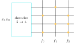

Construction
A ROM with  address lines and data lines has a decoder that activates one of word lines (one per minterm) and an array where each column holds output
address lines and data lines has a decoder that activates one of word lines (one per minterm) and an array where each column holds output  . Programming the array means putting a connection (a transistor) where — or 0, depending on the technology — and none elsewhere. The output is
. Programming the array means putting a connection (a transistor) where — or 0, depending on the technology — and none elsewhere. The output is
Picture

.Dots mark the stored ones: the word lines are minterms, every column ORs its own.
Intuition
A memory does not compute, it remembers every answer. With inputs, there are answers to remember.
Pitfall
The size grows as : a 32-input function would need four billion words. ROMs suit small, dense functions (and FPGA lookup tables use exactly this with ); functions with few product terms are cheaper as PLAs.